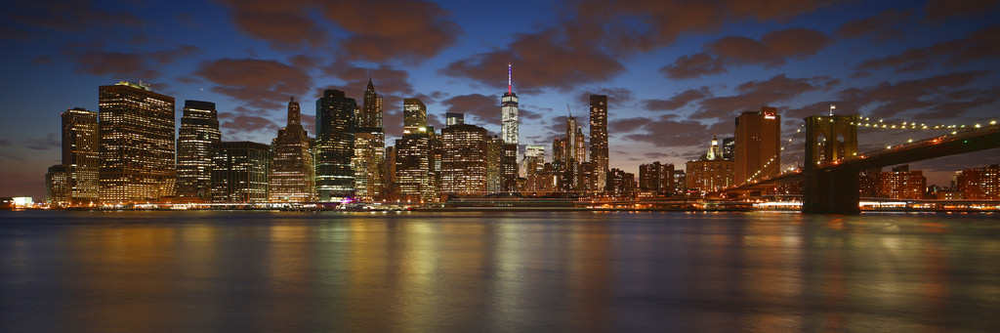

New York City, being the largest city in the United States, understandably has many places to visit. From the cluttered streets to Midtown Manhattan to the much less crowded shores of the Brooklyn piers, New York has many places to admire its views. There is a fit for just about everyone from everywhere.
One of the best places to enjoy the cities' views is one of the many piers located around the city. Dating back to New York's industrial days where goods would be transported from the city all over the world. Today, many of these piers have been transfromed into parks for anyone, from NYC natives to tourists, could enjoy.
